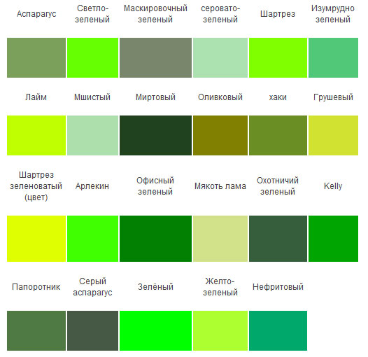

Ottenki Zelenogo
ОТТЕНКИ ЗЕЛЕНОГО ОТ ГОРОХА ДО АСПАРАГУСА
Природа изобилует зеленым цветом: от прохладного оттенка морской волны до насыщенных лесных тонов. Подражают ей и производители отделочных материалов: из года в год они создают все новые и новые обои и ткани, краски и лаки многоликих зеленых оттенков.
"Зеленая гамма очень удачна для «тропического» интерьера. Такой прием освежит комнаты отдыха и спальни, особенно «холодные» – ориентированные на север и лишенные естественного света.
Самые темные сине-зеленые оттенки были популярны в эпоху ар деко, а благодаря ретро-кино их и по сей день выбирают для комнат в будуарном стиле. На большой поверхности они лучше всего смотрятся в сочетании с другими цветами. Классические патнеры — серебристые оттенки и оттенки олова, хотя не менее выигрышно темный сине-зеленый выглядит на фоне золота и бронзы.
